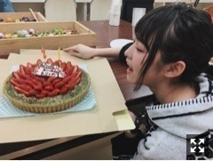
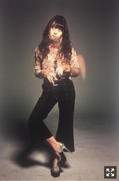
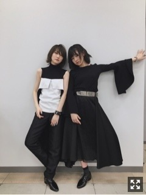

| 2017/03 02 Thu | カットオーライ。764回目 |
装苑×文化学園スペシャルトークショー
Presented by パナソニック「衣類スチーマー」
来てくださった皆様、
ありがとうございました！

こんな感じで、、
児島編集長と千原徹也さんとトーク。
はじめて装苑に載ったのが、
千原さんがデザインした表紙の
リニューアル号と気づいて驚いた！
パナソニックの衣類スチーマーは
ラウンドタイプを元々愛用していましたが、
今回の講義は使い方だったり
またひとつ勉強になったな。
これからもお世話になります。
使いやすいしおすすめですー！

終了後、楽屋に戻ったらケーキが、、！
ああー、うれしい、、！！！
ありがとうございました。
なんか、こんな分際で、、
いろいろしゃべったりしてたけど、
やっぱり、ずっと夢だし、
ずっと憧れの雑誌なのは変わらないし、
なにより、ファッションは楽しい。
ねー！お母さん〜
実はこの日
17thシングル「インフルエンサー」
特典映像を限定公開しました！
あたたかい拍手すごくホッとしたよ〜
発売をお楽しみに。

ジャケ写は通常盤にいます

「インフルエンサー」MV解禁しました。
おめえ誰だよ！状態ですが、
詳しくは特典映像で、、
踊ってる最中
袖が顔にべんべん当たって大変でした。
個人的に自分の踊り癖にぴったりはまる
振付で嬉しかったです。
自分にはまるなーと思ったのは
はじめてかもしれない。
ずっと踊っていたくなるダンスです。
文化にいる幼馴染と久々に会えた！
話は主にファッションブランドの情報交換。
好きなことに直球でいきましょう。
私も頑張ろうと思えた日でした！
まりか
コメント(1045)
2017/03/02 21:40